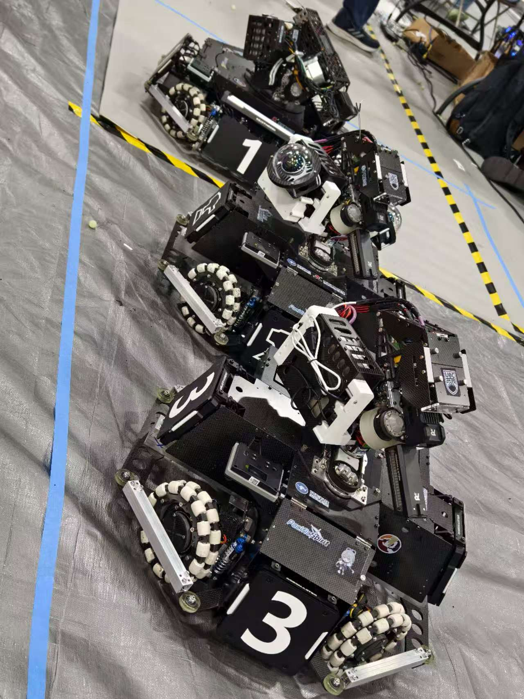
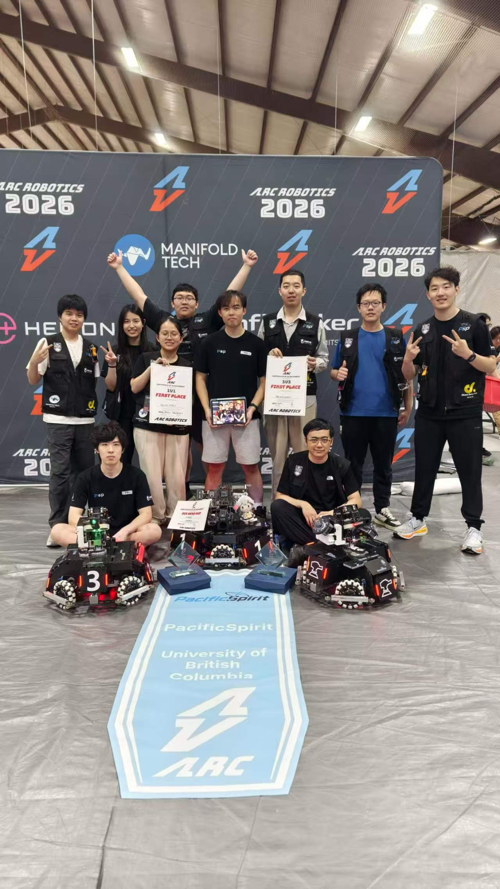

Navigation & mapping
Worked with LiDAR point clouds, filtering, grid maps and occupancy grid generation to support the robot's navigation pipeline.
ROS 2 · LiDAR · RVizMELODY WU / ENGINEERING PORTFOLIO
Pacific Spirit RoboMaster
I'm a Computer Science student at the University of British Columbia, working on computer vision, autonomous navigation and robotics software integration.
Explore my contributions ↓
01 / TECHNICAL CONTRIBUTIONS
My work spans perception and navigation, with an emphasis on making software components work together on physical hardware.
Worked with LiDAR point clouds, filtering, grid maps and occupancy grid generation to support the robot's navigation pipeline.
ROS 2 · LiDAR · RVizInvestigated coordinate frame relationships and alignment between map, odom and base_link to support consistent spatial representations.
TF2 · Spatial reasoningWorked on detection pipelines, iterative testing and parameter tuning under changing lighting and motion conditions.
OpenCV · Python · C++Debugged ROS 2 node communication, launch configurations and mapping components, collaborating with teammates during on-site testing.
Linux · ROS 2 · Git02 / ENGINEERING APPROACH
A conceptual view of the mapping components and coordinate frames I worked with.
map→odom→base_linkSimplified conceptual diagrams, not a complete team system architecture.
When investigating mapping and alignment issues, I worked with point cloud visualizations, coordinate transforms and ROS 2 nodes. Checking these components separately helps distinguish sensor-processing problems from frame or integration issues.
Tools included RViz and TF inspection utilities on Ubuntu.
03 / PHYSICAL ROBOT
Footage from a robot testing environment. The specific test objective is not documented here.

04 / TEAM ACHIEVEMENTS
Our team earned first place in both the 1v1 and 3v3 events at ARC Robotics 2026. My experience includes on-site robotics integration and debugging, working with teammates to prepare physical systems for competition.
Competition results are team achievements.
05 / TOOLKIT